class: center, middle # EE-463 STATIC POWER CONVERSION-I # Power Semiconductor Devices ## Ozan Keysan ## [keysan.me](http://keysan.me) ### Office: C-113 <span class="meta">•</span> Tel: 210 7586 --- # Diode <img src="https://1.bp.blogspot.com/-Re23y5OY__0/Wl-dwP2LzjI/AAAAAAAAK6I/Ul8CZ0JNvgIodEsWtNcpRbaMeueXfJbpACK4BGAYYCw/s1600/picture-741116.jpg" alt="Drawing" style="width: 600px;"/> --- # Power Diode (>50 A) <img src="https://5.imimg.com/data5/TQ/GS/MY-1177100/diode-250x250.jpg" alt="Drawing" style="width: 400px;"/> --- # Ideal Diode <img src="https://www.elprocus.com/wp-content/uploads/2016/08/Ideal-Diode.jpg" alt="Drawing" style="width: 800px;"/> --- # Ideal Diode ## V-I Characteristics -- <img src="https://www.electrical4u.com/images/2017/march/1488428722.PNG" alt="Drawing" style="width: 500px;"/> --- # Practical Diode ## Important Parameters -- - ## Forward Voltage -- - ## Reverse Break-down Voltage -- - ## On-resistance -- - ## Turn-on, turn-off times (forward, reverse-recovery) --- # Practical Diode: V-I Characteristics 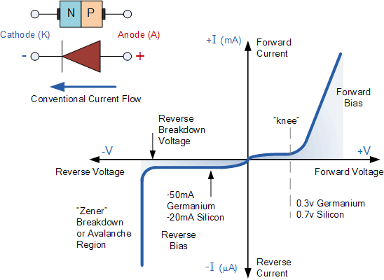 --- # A few Data-sheets - ### [STTH6012, 1200V, 60A Diode](https://www.st.com/en/diodes-and-rectifiers/stth6012.html) - ### [FERD20S100S, 100V, 20 A Diode](https://www.st.com/content/st_com/en/products/diodes-and-rectifiers/field-effect-rectifiers/ferd20s100s.html) --- ## Reverse Biased Diode 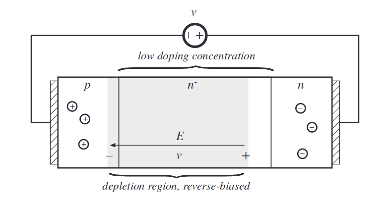 ### [More info](http://ecee.colorado.edu/~ecen5797/course_material/Ch4slides.pdf) #### Eriksson, Fundamentals of Power Electronics, Ch4 --- ## Forward Biased Diode 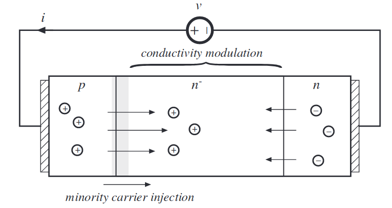 ### [More info](http://ecee.colorado.edu/~ecen5797/course_material/Ch4slides.pdf) #### Eriksson, Fundamentals of Power Electronics, Ch4 --- # Diode Switching Waveforms ## Turn-on transient 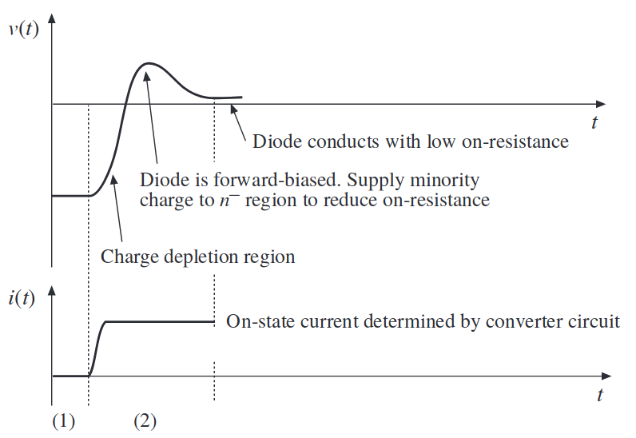 --- # Diode Switching Waveforms ## Turn-off transient 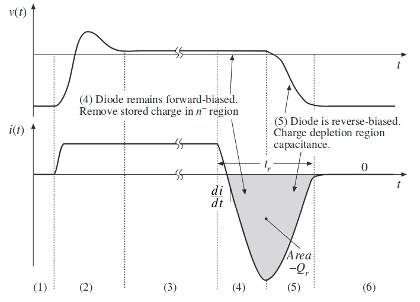 --- # Diode Switching Waveforms ## Turn-off transient 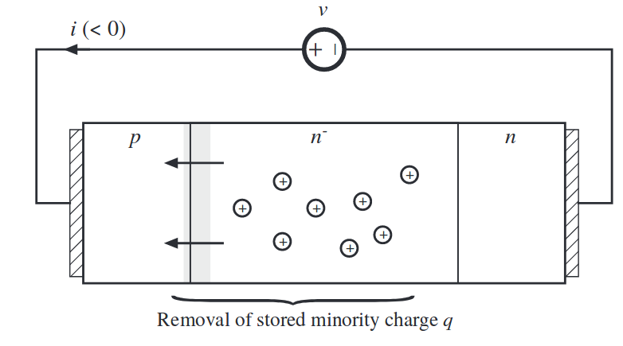 ### Reverse current is required to remove carrier charges --- # Reverse Recovery ### Diode conducts a reverse current during turn-off <img src="https://www.electrical4u.com/images/2017/march/1488793575.PNG" alt="Drawing" style="width: 600px;"/> ### \\(t\_{rr}\\): Reverse recovery time, \\(I\_{rr}\\): Reverse recovery current --- # Reverse Recovery <img src="https://www.allaboutcircuits.com/uploads/articles/1112A-PSD_(5).png" alt="Drawing" style="width: 700px;"/> ### [Softness Factor](https://www.allaboutcircuits.com/technical-articles/a-review-on-power-semiconductor-devices/) ### [Reverse recovery](https://electronics.stackexchange.com/questions/13912/what-is-the-reverse-recovery-time-in-a-diode) ### [Fast diode vs Slow Diode](https://www.circuitlab.com/circuit/jyymtc/diode-reverse-recovery-time-demo/) --- # Types of Power Diodes -- - ## Standard Recovery -- - ## Fast (ultra-fast) Recovery -- - ## [Schottky Diode](https://www.youtube.com/watch?v=GtH8lAzQf2A) - ### Majority carrier (due to metal layer) - ### No recovered charge, \\(t\_{rr}=0\\) - ### Limited to low voltage (<100V) --- # Types of Power Diodes -- 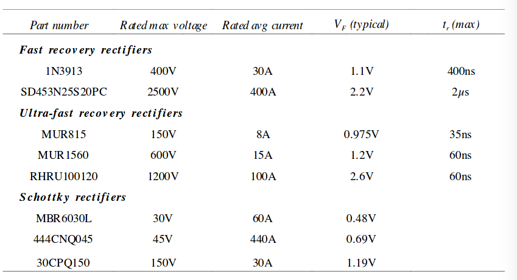 -- ### What is the relation between \\(V\_{max}\\) and \\(V\_{F}\\)? --- # Losses -- # Conduction Losses -- - ## Increases with current -- # Switching Losses -- - ## Increases with turn-on, turn-off-time -- - ## Increases with switching frequency --- # Switching Losses ## Linearized 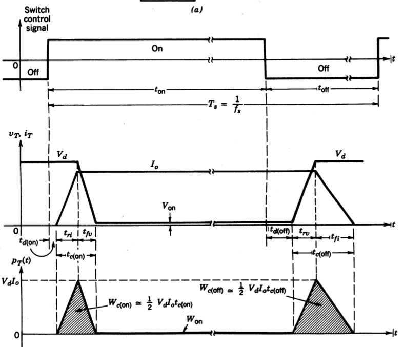 --- # Losses ## Extra Reading Material - ### [Fast, Faster, Fastest](http://www.ixys.com/Documents/AppNotes/IXAN0060.pdf) - ### [Power Losses, Thermal Considerations](http://www.irf.com/electronics/power-losses) - ### [Calculation of conduction losses in a power rectifier](http://www.st.com/content/ccc/resource/technical/document/application_note/d6/8b/bb/1b/a8/b4/4d/c6/CD00003894.pdf/files/CD00003894.pdf/jcr:content/translations/en.CD00003894.pdf) --- # Thyristor -- <img src="https://upload.wikimedia.org/wikipedia/commons/thumb/9/93/Thyristor_circuit_symbol.svg/600px-Thyristor_circuit_symbol.svg.png" alt="Drawing" style="width: 400px;"/> ## A diode with a gate terminal! --- # Thyristor <img src="https://upload.wikimedia.org/wikipedia/commons/thumb/c/c5/Thyristor.svg/800px-Thyristor.svg.png" alt="Drawing" style="width: 800px;"/> -- ## Four layer PNPN semiconductor (and two-transistor equivalent circuit) --- # Thyristor <img src="https://upload.wikimedia.org/wikipedia/commons/thumb/c/c5/Thyristor.svg/800px-Thyristor.svg.png" alt="Drawing" style="width: 800px;"/> ## A diode that you can delay on-state with gate signal(pulse) -- ## but no control while turning-off --- # Thyristor <img src="https://www.radios-tv.co.uk/wp-content/uploads/2016/04/thyristor1.jpg" alt="Drawing" style="width: 600px;"/> --- # Thyristor <img src="https://cdn3.volusion.com/jjraz.uhwvm/v/vspfiles/photos/MCC95-12IO8B-2.jpg?1450700625" alt="Drawing" style="width: 600px;"/> --- # Thyristor: Controlled Rectifier -- <img src="https://www.electronics-tutorials.ws/wp-content/uploads/2018/05/power-power13.gif" alt="Drawing" style="width: 500px;"/> ### More on thyristor rectifiers next week! --- # Thyristor -- - ### Has the highest current and voltage rating among other devices -- - ### Slow switching device (eg compared to MOSFET) -- - ### Latching switch (can be turned on by Ig, but cannot be turned off) --- # Thyristor ## V-I Characteristics - ### Reverse Blocking - ### Forward Blocking - ### Forward Conducting --- ## V-I Characteristics <img src="https://upload.wikimedia.org/wikipedia/commons/thumb/f/f1/Thyristor_I-V_diagram.svg/1280px-Thyristor_I-V_diagram.svg.png" alt="Drawing" style="width: 700px;"/> --- ## V-I Characteristics <img src="https://www.electronics-tutorials.ws/wp-content/uploads/2018/05/power-power12.gif" alt="Drawing" style="width: 600px;"/> --- # Types of Thyristors -- - ## SCR (Silicon Controlled Rectifier) -- - ## TRIAC, DIAC -- - ## GTO (Gate Turn-Off Tyhristor) --- # GTOs <img src="http://www.electronicshub.org/wp-content/uploads/2015/05/GTO-Symbols.jpg" alt="Drawing" style="width: 400px;"/> --- # GTOs <img src="https://dynexsemi.com/portals/0/Images/GTO_Left.png" alt="Drawing" style="width: 500px;"/> ### 4500 V, 3000 A GTO - ## Used at very [high power levels](https://www.dynexsemi.com/products/semiconductors/gate-turn-off-thyristors) --- # GTOs - ## Fully contrallable switch - ## Can be turned-on and turned-off - ## Turn-on achieved by positive current pulse - ## Turn-off achieved by negative current pulse --- # Types of Thyristors ## TRIAC - ## Bi-directional device - ## TRIACs can be triggered by positive or negative current --- # Types of Thyristors ## TRIAC: Two anti-parallel thyristors <img src="http://www.electronics-tutorials.ws/wp-content/uploads/2013/08/power19.gif" alt="Drawing" style="width: 700px;"/> --- # Datasheet Exercise - ## [50 A - 1200 V automotive grade SCR Thyristor](https://static6.arrow.com/aropdfconversion/2e54f9e722f9dd6bb7d560f02f504ec8ec2f1144/3054220324263675dm0013.pdf) --- # MOSFET -- ## Metal-Oxide Semiconductor Field-Effect Transistor -- <img src="https://www.allaboutcircuits.com/uploads/articles/1112A-PSD_(8).png" alt="Drawing" style="width: 550px;"/> --- # MOSFET <img src="https://upload.wikimedia.org/wikipedia/commons/7/79/Lateral_mosfet.svg" alt="Drawing" style="width: 700px;"/> --- # MOSFET ## V-I Characteristics <img src="https://www.allaboutcircuits.com/uploads/articles/1112B-PSD_(12).png" alt="Drawing" style="width: 700px;"/> ### To be discussed more in detail throughout the semester --- # MOSFET ## Body Diode <img src="https://1.bp.blogspot.com/-o2eAiMAILJY/XRxMOYTKpzI/AAAAAAAACKE/r307m5shqKkXh93WCqNEJK-I0CFKAe6RwCLcBGAs/s640/body%2Bdiode%2Bin%2Bmosfet.png" alt="Drawing" style="width: 500px;"/> ### [Power MOSFET Basics](http://www.ixys.com/Documents/AppNotes/IXAN0061.pdf) --- ## Equivalent Circuit 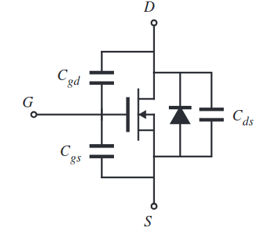 ### Cgs: large, constant ### Cgd: small, highly nonlinear ### Cds: intermediate, nonlinear --- ## MOSFET Comparison 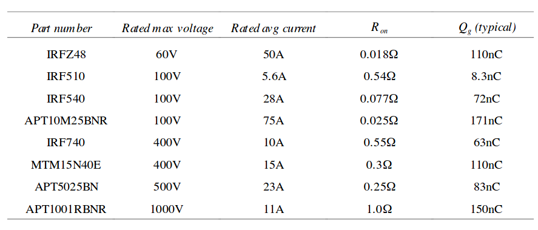 --- ## MOSFET -- - ### Fast device (ten to hundreds kHz) -- - ### Easy to drive -- - ### Blocking voltage is usually <500 V -- - ### Positive Temperature coefficient (easy to parallel) -- - ### Body diode can conduct the full rated current (but usually slow) -- - ### Switching time determined by charging/discharging gate capacitors --- # IGBT -- ## Insulated-Gate Bipolar Transistor -- <img src="https://www.fujielectric-europe.com/documents/igbt_modules_industrial.jpg" alt="Drawing" style="width: 700px;"/> --- # IGBT 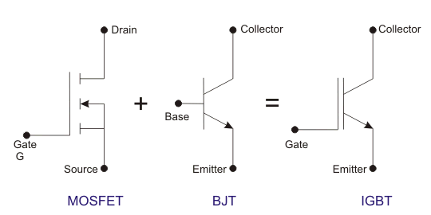 ### [IGBT](https://www.youtube.com/watch?v=3HDzqDZaprE) ### [IGBT, when to use them?](https://www.youtube.com/watch?v=RxRJW09A_XA) ### [IGBT or MOSFET?](https://www.youtube.com/watch?v=nxhvLEWa7R4) --- # IGBT -- - ## Slower compared to MOSFET (<20-30kHz) -- - ## Lower on-resistance -- - ## Can withstand higher voltages (upto 1700V) -- - ## Possible to parallel for new generations -- - ## Probably best choice for 500-1700V, kWs of applications --- # IGBT Comparison 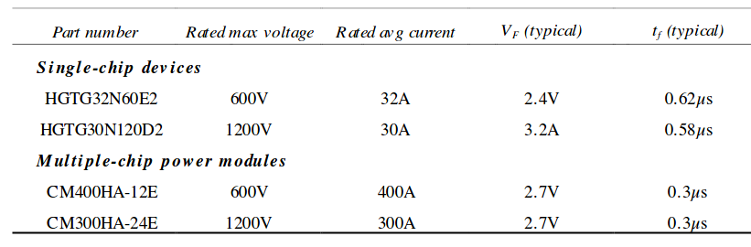 ### To be discussed more in detail throughout the semester --- # Data-Sheet Exercise - ### [IGBT, H series 1200 V, 40 A high speed](https://www.st.com/en/power-transistors/stgw40h120df2.html) --- ## Some New Transistor Technologies -- # GaN <img src="https://www.pntpower.com/wp-content/uploads/2016/11/XGaN_Comp-705x304.jpg" alt="Drawing" style="width: 600px;"/> ### [Advancing power supply solutions through the promise of GaN](http://www.ti.com/lit/wp/sszy017/sszy017.pdf) ### [Power GaN Opens New Applications](http://www.power-mag.com/pdf/feature_pdf/1371723815_EPC_Feature_Layout_1.pdf) --- ## Some New Transistor Technologies # SiC <img src="http://newsroom.toyota.co.jp/pages/news/images/2014/05/20/1330/20140520_01_w450_h230.jpg" alt="Drawing" style="width: 600px;"/> ### [Next Generation Power Semiconductors: What is GaN / SiC?](http://www.semicon.sanken-ele.co.jp/en/guide/GaNSiC.html) --- ## Some New Transistor Technologies <img src="https://www.pntpower.com/wp-content/uploads/2016/12/sic-gan-positioning.jpg" alt="Drawing" style="width: 700px;"/> --- ## You can download this presentation from: [keysan.me/ee463](http://keysan.me/ee463)